Chapter 6 – CCNA 2
01. What two advantages does CIDR provide to a network? (Choose two.)
- reduced routing table size;
- dynamic address assignment;
- automatic route redistribution;
- reduced routing update traffic;
- automatic summarization at classful boundaries;
02. Refer to the exhibit. The network administrator wants to create a subnet for the point-to-point connection between the two routers. Which subnetwork mask would provide enough addresses for the point-to-point link with the least number of wasted addresses?
- 255.255.255.192
- 255.255.255.224
- 255.255.255.240
- 255.255.255.248
- 255.255.255.252
03. 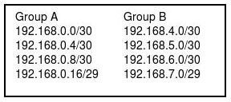 Refer to the exhibit. A network engineer is summarizing the two groups of routes on router R1 shown in the exhibit. Which summarization will work for all the subnets?
- 192.168.0.0/23
- 192.168.0.0/22
- 192.168.0.0/21
- 192.168.0.0/20
04. Which of the following are contained in the routing updates of classless routing protocols? (Choose two.)
- 32-bit address;
- next hop router interface;
- subnet mask;
- unicast host address;
- Layer 2 address;
05.Which of the following problems does VLSM help to alleviate?
- the shortage of IP addresses;
- the difficulty of assigning static IP addresses to hosts in large enterprises;
- the complexity of implementing advanced routing protocols such as OSPF and EIGRP;
- the shortage of network administrators qualified in the use of RIP v1 and IGRP;
06. What does VLSM allow a network administrator to do?
- utilize one subnet mask throughout an autonomous system;
- utilize multiple subnet masks in the same IP address space;
- utilize IGRP as the routing protocol in an entire autonomous system;
- utilize multiple routing protocols within an autonomous system;
07. 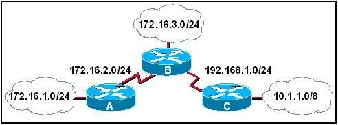 Refer to the exhibit. What subnet mask will be applied by router B when it receives a RIPv1 update for the network 172. 16.1.0?
- none
- 8
- 16
- 24
08. 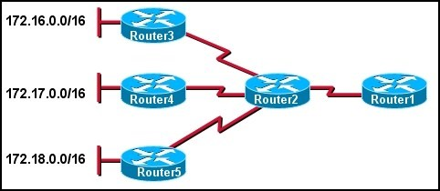 Refer to the exhibit. The network administrator wants to minimize the number of entries in Router1’s routing table. What should the administrator implement on the network?
- VLSM;
- CIDR;
- private IP addresses;
- classful routing;
09. A router has a summary route to network 192.168.32.0/20 installed in its routing table. What range of networks are summarized by this route?
- 192.168.0.0 – 192.168.32.0/24 ;
- 192.168.0.0 – 192.168.47.0/24 ;
- 192.168.32.0 – 192.168.47.0/24 ;
- 192.168.32.0 – 192.168.48.0/24 ;
- 192.168.32.0 – 192.168.63.0/24 ;
10. A network administrator is tasked with dividing up a class C network among the QA, Sales, and Administration departments. The QA department is made up of 10 people, the Sales is made up of 28 people, and the Administration has 6. Which two subnets masks adequately address the QA and Sales departments? (Choose two.)
- 255.255.255.252 for QA
- 255.255.255.224 for Sales
- 255.255.255.240 for QA
- 255.255.255.248 for QA
- 255.255.255.0 for Sales
11. 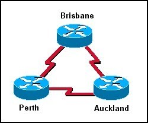 In the network shown in the graphic, three bits were borrowed from the host portion of a Class C address. How many valid host addresses will be unused on the three point-to-point links combined if VLSM is not used?
- 3
- 4
- 12
- 36
- 84
- 180
12. 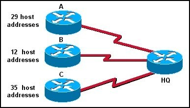 A Class C address has been assigned for use in the network shown in the graphic. Using VLSM, which bit mask should be used to provide for the number of host addresses required on Router A, while wasting the fewest addresses?
- /31
- /30
- /29
- /28
- /27
- /26
13. 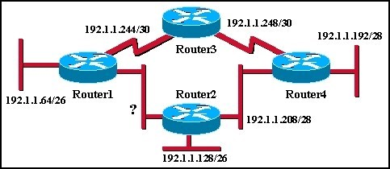 An additional subnet is required for a new Ethernet link between Router1 and Router2 as shown in the diagram. Which of the following subnet addresses can be configured in this network to provide a maximum of 14 useable addresses for this link while wasting the fewest addresses?
- 192.1.1.16/26
- 192.1.1.96/28
- 192.1.1.160/28
- 192.1.1.196/27
- 192.1.1.224/28
- 192.1.1.240/28
14. Which three interior routing protocols support VLSM? (Choose three.)
- OSPF
- RIP v1
- RIP v2
- EIGRP
- BGP
- STP
15. 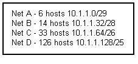 Refer to the exhibit. The number of required host addresses for each subnet in a network is listed in the exhibit. This number includes the host address requirements for all router ports and hosts on that subnet. After all device and router port address assignments are determined, what will be the total number of unused host addresses available?
- 6
- 14
- 29
- 34
- 40
- 62
16.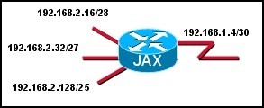 Refer to the exhibit. In the network that is shown, the router interfaces are assigned the first address in each subnet. Which IP address would be usable for a host on one of the LANs in this network?
- 192.168.1.5/30
- 192.168.2.17/28
- 192.168.2.63/27
- 192.168.2.130/25
17. 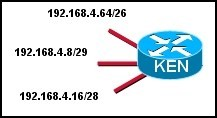 Refer to the exhibit. Which address is a broadcast address for one of the subnets that are shown in the exhibit?
- 192.168.4.3/29
- 192.168.4.15/29
- 192.168.4.65/26
- 192.168.4.255/24
18. 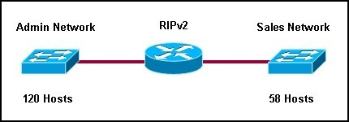 Refer to the exhibit. A network administrator needs to create two subnetworks from 10.0.0.0/8 for a router running RIPv2. The Admin subnet requires 120 hosts and the Sales subnet requires 58 hosts. The network administrator assigned 10.0.1.128/25 to the Admin subnet. The Sales subnet is given 10.0.1.192/26. What will be the result of this addressing scheme?
- Because RIPv2 does not support VLSM, the subnet masks will not be allowed.
- The subnets will not have enough host addresses for the given network requirements.
- The subnets overlap and will be rejected by the router.
- The router will support the addressing scheme.
19. 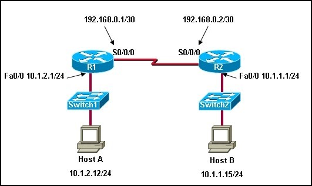 Refer to the exhibit. A network technician enters the static route in R1 needed to reach network 10.1.1.0/24.
A ping from R1 to Host B fails. The technician begins testing the network and has the following results:
1. pings from R1 to the S0/0/0 interface on R2….successful;
2. pings from R1 to the Fa0/0 interface on R2….successful;
3. pings from Host B to hosts on the 10.1.1.0/24 network….successful;
4. pings from Host B to the Fa0/0 interface on R2….successful;
5. pings from R2 to Host B….successful;
What is the likely cause of the failure of the ping from R1 to Host B?
- Host B has a defective Ethernet card.
- The default gateway on Host B is not correctly set.
- There is a Layer 2 problem between R2 and Host B.
- R2 does not have routes back to networks connected to R1.
20. What is a supernet?

{kind=link}
{kind=link}
{kind=link}
{kind=link}
{kind=link}
{kind=link}
{kind=link}
{kind=link}
{kind=link}
{kind=link}
{kind=link}
{kind=link}